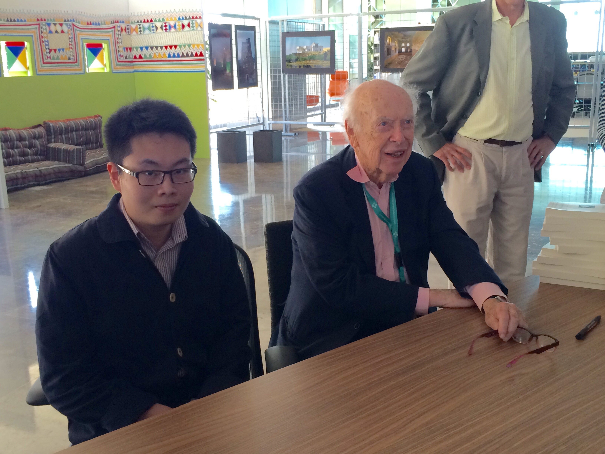
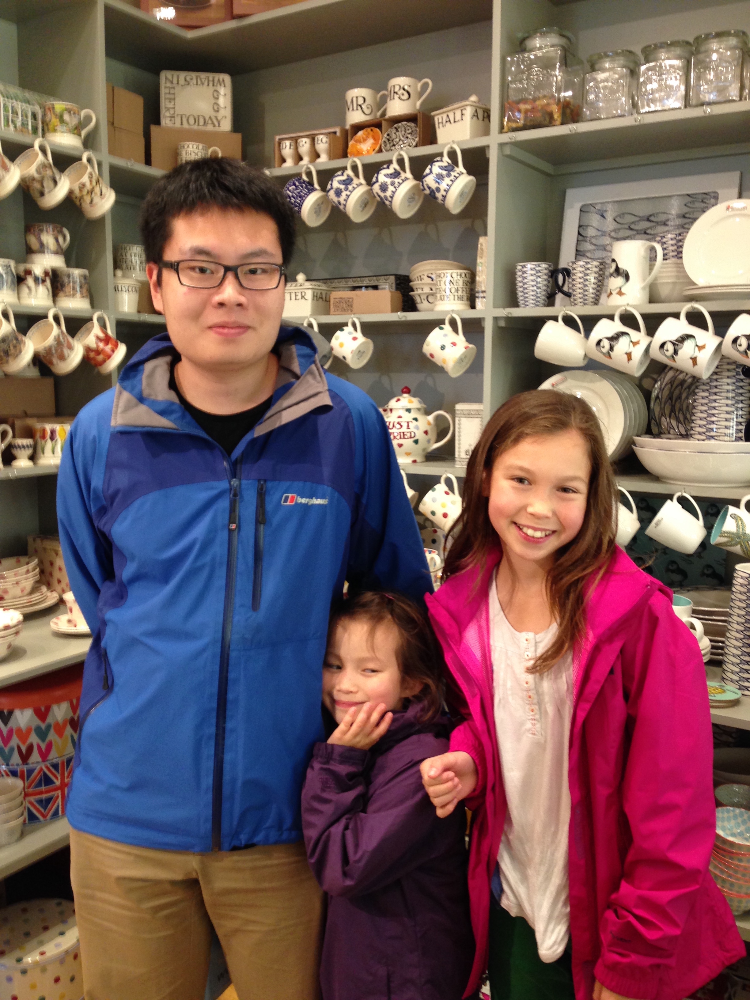

Gallery
Photos, history, friends
January 2016

Me and my poster at KAUST. I was invited to KAUST Winter Enrichment Program to present my research poster based on my summer research supervised by Dmitri Vassiliev. KAUST is a pleasing place to stay in Saudi Arabia. It has a plenty of world's most advanced laboratories. Made some good friends. 
Also got a nice photo with James Watson, the famous biologist who discovered the Watson-Crick double-helix model of DNA.
September 2015
Me, Melody Z. and Juliette Z.. Juliette and Melody are my cousin sisters. By the time of the shot, I was 20, Juliette was 10 and Melody was 5, the coincidence which makes a geometric sequence. We were celebrating that Juliette had been a scholar at her independent school, and that Melody finally started her study in mathematics.